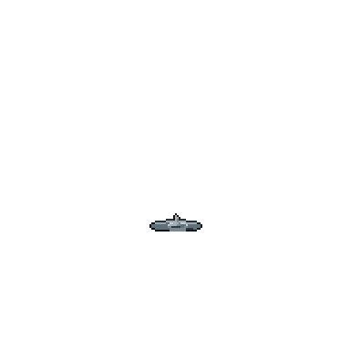

Codex
Codex
Collection
Old Scrolls
Achievements
Paths Above
Seasons
Cards filled 2 / 68
Next at 10: Collector title, drops +1%
Valley Shore0 of 3
Willow Path0 of 2
Stonewall Quarry0 of 4
Reed Marsh1 of 4
Bamboo Grove0 of 3
Caravan Road0 of 4
Azure Expanse1 of 15
+7 more pages below
Reed Marsh
4 beasts · each card fills at 50
? ? ?
Not yet met
Lives at Marsh Edge
? ? ?
Not yet met
Lives at Marsh Edge

Greyfin
Rank 1 spirit beast
46 more to fill
50
Hollowed Boarlet
Rank 1 Hollowed
Filled · on to seal II
I
Seal Ievery card at 50
Hollow Ward +2
II
Seal IIevery card at 500, after seal I
Healing +1% · a Bestiary Leaf
Each seal is set once and pays once. Seal II keeps a finished page worth hunting.